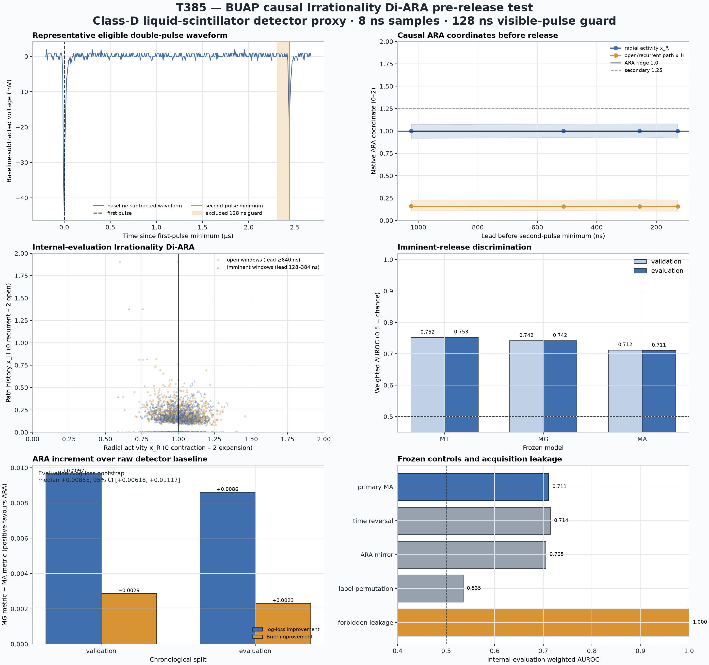

T385 — BUAP causal Irrationality Di-ARA pre-release test
NOT SUPPORTED
Question: Does causal inter-pulse detector geometry predict the later decay-electron handover outside a 128 ns visible-pulse guard?
Claim ceiling: Class-D detector proxy conditional on a recorded double pulse. Neutrinos were not observed and the cohort excludes unrecorded daughters.
Frozen orientation: movement/release is 0 → 2. The 1.25 liquid landmark is descriptive only.

Decision gates
- FAIL — movement side and positive gradient
- PASS — logloss and brier improve both splits
- FAIL — auc gain at least 0p02 both splits
- PASS — evaluation bootstrap delta above zero
- FAIL — ordered orientation beats controls by 0p02
- PASS — causal guard and acquisition fields excluded
Model scores
| Split | Model | AUROC | Log loss | Brier | Events | Windows |
|---|---|---|---|---|---|---|
| calibration | M0 | 0.5000 | 0.69315 | 0.25000 | 929 | 49630 |
| calibration | MT | 0.7566 | 0.63844 | 0.22179 | 929 | 49630 |
| calibration | MG | 0.7493 | 0.63786 | 0.22151 | 929 | 49630 |
| calibration | MA | 0.7195 | 0.62745 | 0.21831 | 929 | 49630 |
| calibration | MLEAK | 1.0000 | 0.02530 | 0.00254 | 929 | 49630 |
| validation | M0 | 0.5000 | 0.69315 | 0.25000 | 948 | 53755 |
| validation | MT | 0.7524 | 0.64306 | 0.22346 | 948 | 53755 |
| validation | MG | 0.7419 | 0.64335 | 0.22361 | 948 | 53755 |
| validation | MA | 0.7123 | 0.63369 | 0.22073 | 948 | 53755 |
| validation | MLEAK | 0.9999 | 0.02549 | 0.00263 | 948 | 53755 |
| evaluation | M0 | 0.5000 | 0.69315 | 0.25000 | 920 | 51434 |
| evaluation | MT | 0.7530 | 0.64039 | 0.22246 | 920 | 51434 |
| evaluation | MG | 0.7418 | 0.64092 | 0.22270 | 920 | 51434 |
| evaluation | MA | 0.7108 | 0.63230 | 0.22038 | 920 | 51434 |
| evaluation | MLEAK | 1.0000 | 0.02521 | 0.00259 | 920 | 51434 |
Eligibility ledger
| Split | Reason | Count |
|---|---|---|
| engineering | eligible | 364 |
| engineering | insufficient_interpulse | 106 |
| engineering | insufficient_prepulse | 12 |
| engineering | pulse_below_10mV | 18 |
| calibration | eligible | 1157 |
| calibration | insufficient_interpulse | 267 |
| calibration | insufficient_prepulse | 36 |
| calibration | pulse_below_10mV | 40 |
| validation | eligible | 1180 |
| validation | insufficient_interpulse | 251 |
| validation | insufficient_prepulse | 24 |
| validation | pulse_below_10mV | 45 |
| evaluation | eligible | 1148 |
| evaluation | insufficient_interpulse | 271 |
| evaluation | insufficient_prepulse | 27 |
| evaluation | pulse_below_10mV | 55 |
Interpretation boundary
The frozen detector-proxy test did not pass every advance-prediction gate. Any movement-side or 1.25 proximity is descriptive unless it also improves held-out prediction beyond raw detector covariates and survives the controls.
Source: BUAP Real Time Muon Lifetime Experiment. Development file hash: C2DC1E012FBDF0F3C5EC305E2D8E4DD1D87B05DF5CBA39B492189C0F7D5454CD.